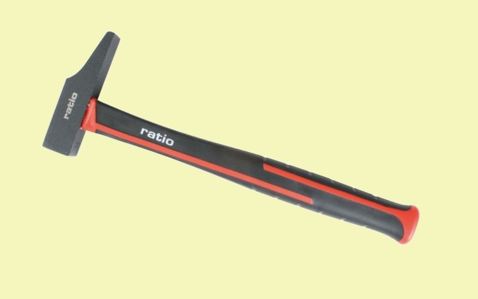

El martillo de carpintero, también conocido como martillo de oreja, martillo de garras o martillo de uña, sirve para realizar golpes en clavos o mismo para extraerlos de donde se hayan colocado. Esta herramienta se aplica en distintos procesos de construcción.
